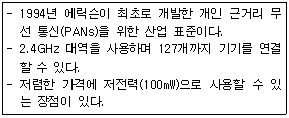
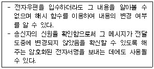

네트워크관리사-1급 (2012-04-08 기출문제)
1과목: TCP/IP
1. SSH 프로토콜은 외부의 어떤 공격을 막기 위해 개발 되었는가?
- Sniffing
- DoS
- Buffer Overflow
- Trojan Horse
(정답률: 72%)

2. ARP와 RARP에 대한 설명 중 옳지 않은 것은?
- ARP와 RARP는 전달 계층(Transport Layer)에서 동작하며 인터넷 주소와 물리적 하드웨어 주소를 변환하는데 관여한다.
- ARP는 IP 데이터그램을 정확한 목적지 호스트로 보내기 위해 IP에 의해 보조적으로 사용되는 프로토콜이다.
- RARP는 로컬 디스크가 없는 네트워크상에 연결된 시스템에 사용된다.
- RARP는 브로드캐스팅을 통해 해당 네트워크 주소에 대응하는 하드웨어의 실제 주소를 얻는다.
(정답률: 64%)
3. TCP/IP에 대한 설명으로 옳지 않은 것은?
- TCP는 전송 및 에러검출을 담당한다.
- IP 패킷에는 크기의 제한이 있다.
- TCP는 한 번에 많은 상대에게 데이터를 전달하고자 할 때 사용된다.
- IP는 패킷을 유실 또는 왜곡시키기도 한다.
(정답률: 54%)
4. TCP 세션의 성립에 대한 설명으로 옳지 않은 것은?
- 세션 성립은 TCP Three-Way Handshake 응답 확인 방식이라 한다.
- 실제 순서번호는 송신 호스트에서 임의로 선택된다.
- 세션 성립을 원하는 컴퓨터가 ACK 플래그를 '0'으로 설정하는 TCP 패킷을 보낸다.
- 송신 호스트는 데이터가 성공적으로 수신된 것을 확인하기까지는 복사본을 유지한다.
(정답률: 54%)
5. 서브넷 마스크(Subnet Mask)에 대한 설명 중 올바른 것은?
- IP Address에서 Network Address와 Host Address를 구분하는 기능을 수행한다.
- 하나의 Network를 두 개 이상의 Network로 나눌 수 없다.
- IP Address는 효율적으로 관리하나 트래픽 관리 및 제어가 어렵다.
- 불필요한 브로드캐스트 메시지를 제한할 수 없다.
(정답률: 62%)
6. 아래 내용이 설명하는 기술은?

- IEEE 1394
- IEEE 802.11x
- HomeRF
- Bluetooth
(정답률: 60%)
7. FTP 클라이언트와 서버 사이에서 FTP 세션에 대한 설명으로 옳지 않은 것은?
- 첫 번째 세션이 서버와 클라이언트의 PI(Protocol Interpreter) 서비스 사이에 일어난다.
- 사용자 쪽에서는 임의로 할당된 포트 넘버를 사용하며 FTP 서버의 TCP 포트 22와 연결된다.
- 사용자 쪽의 PI는 클라이언트와 서버 사이에 제어를 위한 연결을 시작한다.
- FTP 서버로 각 명령어를 보내기 위해 FTP 클라이언트로 제어 연결을 통해 응답이 돌아온다.
(정답률: 69%)
8. B Class에 대한 설명 중 옳지 않은 것은?
- Network ID는 128.0 ~ 191.255 이고, Host ID는 0.1 ~ 255.254 가 된다.
- IP Address가 150.32.25.3인 경우, Network ID는 150.32 Host ID는 25.3 이 된다.
- Multicast 등과 같이 특수한 기능이나 실험을 위해 사용된다.
- Host ID가 255.255일 때는 메시지가 네트워크 전체로 브로드 캐스트 된다.
(정답률: 63%)
9. IP에서 발생하는 오류를 처리하기 위한 프로토콜은?
- PPP
- SLIP
- TCP
- ICMP
(정답률: 74%)
10. 무선 랜 표준 기술과 사용하는 변조방식 연결로 옳지 않은 것은?
- IEEE 802.11a : OFDM
- IEEE 802.11b : HR-DSSS
- IEEE 802.11g : FHSS
- IEEE 802.11n : OFDM
(정답률: 43%)
11. SMTP에 대한 설명 중 올바른 것은?
- 네트워크의 구성원에 패킷을 보내기 위한 하드웨어 주소를 정한다.
- TCP/IP 프로토콜에서 데이터의 전송 서비스를 규정한다.
- TCP/IP 프로토콜의 IP에서 접속 없이 데이터의 전송을 수행하는 기능을 규정한다.
- 인터넷상에서 전자우편(E-Mail)의 전송을 규정한다.
(정답률: 82%)
12. 멀티캐스트 라우터에서 멀티캐스트 그룹을 유지할 수 있도록 메시지를 관리하는 프로토콜은?
- ARP
- ICMP
- IGMP
- FTP
(정답률: 83%)
13. RIP에 대한 설명으로 옳지 않은 것은?
- 독립적인 네트워크 내에서 라우팅 정보 관리를 위해 광범위하게 사용된 프로토콜이다.
- 자신이 속해 있는 네트워크에 매 30초마다 라우팅 정보를 브로드캐스팅(Broadcasting) 한다.
- 네트워크 거리를 결정하는 방법으로 홉의 총계를 사용한다.
- 대규모 네트워크에서 최적의 해결방안이다.
(정답률: 72%)
14. SNMP 시스템의 구성요소에 대한 설명 중 옳지 않은 것은?
- SMI는 관리장치가 SNMP 관리 시스템에 상세한 상태를 보고할 때 사용된다.
- SMI는 SNMP 관리자가 관리할 수 있는 정보에 대한 표준화된 골격을 지원한다.
- SNMP 프로토콜에서 포트 161은 모든 SNMP 요청/응답 메시지가 사용하는 수신지 포트이다.
- SNMP 프로토콜에서 포트 162는 모든 SNMP 트랩 메시지가 사용하는 수신지 포트이다.
(정답률: 14%)
15. IP Address와 라우터에 대한 설명으로 옳지 않은 것은?
- IP Address는 Network ID와 Host ID로 구성된다.
- 라우터는 라우팅 알고리즘을 이용하여 최적의 경로를 산출한다.
- 라우터는 Network ID에 근거하여 IP 데이터 그램을 라우팅 한다.
- 라우터는 망의 위치 정보뿐만 아니라 인터넷상의 모든 컴퓨터의 위치 정보를 알고 있다.
(정답률: 75%)
16. IP의 특성으로 옳지 않은 것은?
- 최대 패킷의 크기는 65,535Byte이다.
- 연결 지향 프로토콜이다.
- 인터넷 데이터그램을 송신지로부터 수신지로 전송하는데 필요한 기능을 제공한다.
- 호스트의 주소 지정과 패킷 절단의 기능을 담당한다.
(정답률: 54%)
2과목: 네트워크 일반
17. OSI 7 Layer의 각 Layer 별 Data 형태로서 적당하지 않은 것은?
- Transport Layer - Segment
- Network Layer - Packet
- Datalink Layer - Fragment
- Physical Layer - bit
(정답률: 65%)
18. 아날로그 신호를 전송하기 위한 필수적인 신호처리 과정으로 옳지 않은 것은?
- 부호화
- 양자화
- 정보화
- 표본화
(정답률: 72%)
19. 전송한 프레임의 순서에 관계없이 단지 손실된 프레임만을 재전송하는 방식은?
- Selective-repeat ARQ
- Stop-and-wait ARQ
- Go-back-N ARQ
- Adaptive ARQ
(정답률: 80%)
20. 베이스밴드(Baseband) 시스템보다 브로드 밴드(Broadband) 시스템이 더 많은 데이터를 전송할 수 있는 이유는?
- 여러 개의 주파수로 여러 개의 채널에 접근할 수 있기 때문
- 양방향 신호흐름을 지원할 수 있기 때문
- 서버에 데이터를 저장하였다가 한번에 데이터를 전송할 수 있기 때문
- 한번에 한 개의 신호 또는 한 개의 채널을 전송할 수 있기 때문
(정답률: 57%)
21. 광통신 전송로의 특징으로 옳지 않은 것은?
- 긴 중계기 간격
- 대용량 전송
- 비전도성
- 협대역
(정답률: 62%)
22. 다중화(Multiplexing)의 장점으로 옳지 않은 것은?
- 전송 효율 극대화
- 전송설비 투자비용 절감
- 통신 회선설비의 단순화
- 신호처리의 단순화
(정답률: 80%)
23. HDLC(High Level Data Link Control Procedure)에서 제어필드의 S(Supervisory)프레임에 해당되지 않는 것은?
- RR(Receive Ready)
- SNRM(Set Normal Response Mode)
- REJ(REJect)
- SREJ(Selective REJect)
(정답률: 58%)
24. VoIP(Voice over Internet Protocol)에 대한 설명으로 옳지 않은 것은?
- 인터넷 서비스를 제공하기 위한 표준에는 ITU-T에서 권고하고 있는 H.261과 IETF에서 규정한 H.263으로 구분된다.
- 음성과 데이터를 통합하여 하나의 통신 네트워크에 전송하는 방식이다.
- VoIP 게이트웨이는 회선교환망과 패킷교환망을 연동시키는 기능이 있다.
- 서비스 형태로는 PC(웹) to PC(웹) 방식, PC(웹) to Phone 방식, Phone to Phone 방식이 있다.
(정답률: 63%)
25. Fast Ethernet의 주요 토폴로지로 사용되는 방식은?
- BUS
- STAR
- CASCADE
- TRI
(정답률: 50%)
26. Frame Relay에서 교환기의 기능으로 올바른 것은?
- 오류 검사
- 오류 정정
- 회선 원칙
- 데이터 재생성
(정답률: 29%)
27. FDDI에 대한 설명으로 옳지 않은 것은?
- IEEE 803.2에서 표준으로 지정되어있다.
- 망 신뢰도를 높이기 위해 이중 링 방식을 사용한다.
- 100Mbps 이상의 전송속도를 낼 수 있다.
- 광섬유를 전송매체로 사용한다.
(정답률: 58%)
3과목: NOS
28. DNS 데이터베이스 레코드의 유형 중 연결이 옳지 않은 것은?
- MX - 메일 교환기 호스트의 메시지 라우팅을 제공한다.
- A - 호스트 이름을 IPv4 주소로 매핑한다.
- CNAME - 주소를 호스트이름으로 매핑한다.
- NS - 이름 서버를 나타낸다.
(정답률: 65%)
29. 관리자가 사용자의 계정을 관리하기 위해 할 수 있는 행동으로 옳지 않은 것은?
- 암호가 없거나 너무 쉬운 계정은 사용 중지를 시키거나 경고를 주어 암호를 변경 하도록 한다.
- 계정 만료 기간을 두어 일정 기간이 지나면 해당 계정을 사용하지 못하게 한다.
- 오랫동안 사용되지 않은 계정은 통보 없이 사용 중지 시키고 삭제한다.
- 한 사용자가 하나의 컴퓨터에서만 로그인 할 수 있게 설정한다.
(정답률: 44%)
30. Windows 2000 Server에서 지원하는 NTFS 파일시스템에 대한 설명으로 옳지 않은 것은?
- 폴더나 파일에 대한 개별적인 허가가 가능하다.
- 파일의 압축 저장과 실시간 복구를 지원한다.
- Convert.exe 명령을 사용하면 FAT에서 NTFS로, NTFS에서 FAT으로의 상호 변환이 가능하다.
- 대용량의 저장 미디어에 적합하다.
(정답률: 50%)
31. Linux에서 kill 명령어를 사용하여 해당 프로세스를 중단되도록 하려고 하는데, 중단하고자 하는 프로세스의 번호(PID)를 모를 경우 사용하는 명령어는?
- ps
- man
- help
- ls
(정답률: 70%)
32. Windows 2000 Server의 IIS를 이용하여, 홈페이지의 첫 페이지를 ‘index.htm' 이라는 이름으로 서비스 하려 할 때 해야 하는 작업으로 올바른 것은?
- 기본 웹 사이트의 기본 디렉터리를 변경한다.
- 액세스 권한을 바꿔준다.
- 문서탭의 기본 문서에 index.htm을 등록한다.
- ISAPI 필터 항목 설정을 수정한다.
(정답률: 63%)
33. Linux 관리자인 당신은 Sendmail을 설정하여 회사 메일서버로 활용하려고 한다. 당신이 수행해야 할 부분과 내용으로 옳지 않은 것은?
- /etc/mail/access : Relay 설정
- /etc/mail/relay-domains : Realy 설정
- /etc/sendmail.cf : 메일크기 제한
- /etc/inetd.conf : 별명부여 설정
(정답률: 58%)
34. Windows 2000 Server의 역할 중 도메인 컨트롤러에 대한 설명으로 옳지 않은 것은?
- SAM 데이터베이스를 이용하여 로그온 인증을 한다.
- 도메인 사용자들이 자원을 공유할 수 있도록 도와준다.
- 맨 처음 생성되는 도메인 컨트롤러에 Ntds.dit라는 파일이 생성된다.
- 사용자의 인증작업 및 로그온 과정을 담당한다.
(정답률: 31%)
35. Windows 2000 Server에서 동적 디스크의 특징으로 옳지 않은 것은?
- 디스크에 대한 모든 구성 정보가 디스크에 저장된다.
- 디스크의 설정 정보가 그 디스크 자체에 저장된다.
- 볼륨이 연속되지 않은 디스크 영역으로 확장이 가능하다.
- 기본 파티션과 확장 파티션으로 나뉜다.
(정답률: 50%)
36. 터미널 서비스를 이용할 때의 장점으로 옳지 않은 것은?
- 그래픽 기반으로 원격지 접속이 가능하다.
- 네트워크 트래픽이 증가한다.
- 클라이언트의 비용과 관리 부담을 절감 할 수 있다.
- 클라이언트의 작업을 감시 할 수 있다.
(정답률: 58%)
37. 삼바(Samba)에 관한 설명 중 옳지 않은 것은?
- Linux와 이기종간의 파일 시스템이나 프린터를 공유하기 위해 설치하는 서버 및 클라이언트 프로그램이다.
- 삼바에 대한 정보와 다운로드는 'http://www.samba.org'에서 얻을 수 있다.
- 삼바의 실행은 '$/etc/rc.d/smb start' 로 한다.
- 삼바의 종료는 '$/etc/rc.d/smb exit' 로 한다.
(정답률: 50%)
38. Exchange Server에 대한 설명으로 옳지 않은 것은?
- 네트워크 상에서 자유롭게 메일을 주고 받을 수 있다.
- 메일 전문 서버 프로그램이다.
- 다른 시스템과 Exchange 통합이 가능하다.
- 서버에는 여러 개의 사이트가 존재한다.
(정답률: 42%)
39. Linux에서 게이트웨이를 추가 또는 삭제하려고 할 때 사용되는 명령어는?
- route
- ipconfig
- ping
- passwd
(정답률: 53%)
40. Linux 시스템의 기본 디렉터리에 대한 설명으로 옳지 않은 것은?
- /etc : 시스템 설정과 관련된 파일이 저장된다.
- /dev : 시스템의 각종 디바이스에 대한 드라이버들이 저장된다.
- /var : 시스템에 대한 로그와 큐가 쌓인다.
- /usr : 각 유저의 홈 디렉터리가 위치한다
(정답률: 38%)
41. Linux에서 LILO에 대한 설명으로 옳지 않은 것은?
- Linux 로더를 의미한다.
- Default 옵션이 지정하지 않으면 이 파일에 지정된 맨 마지막 이미지를 부팅한다.
- 여러 개의 운영체제를 선택할 수 있게 해주는 일종의 스위치이다.
- 부트 로더가 있는 Windows 2000 Server와도 Linux가 공존할 수 있게 해준다.
(정답률: 30%)
42. Linux 시스템의 파일 사용자 허가에 대한 설명으로 옳지 않은 것은?
- 사용 허가의 3가지 부분으로 나눠지며, 이것은 읽기(Read), 쓰기(Write), 실행(Execute) 가능 허가이다.
- Linux 시스템은 다중 사용자 시스템이기 때문에 파일 사용 허가라 불리우는 메커니즘을 제공한다.
- 사용 허가의 문자열 'rwx'를 십진수로 나타내면 r은 4, w는 2, x는 0 이다.
- 문자열 '-rwxrwxrwx'에서 '-'는 일반 파일을 의미한다.
(정답률: 86%)
43. tar로 묶인 mt.tar를 풀어내는 명령은?
- tar –tvf mt.tar
- tar -cvf mt.tar
- tar –cvvf mt.tar
- tar -xvf mt.tar
(정답률: 65%)
44. Web Server 구축시 Server의 데몬을 스스로 구동하며, 지정된 포트를 점유하면서 클라이언트의 요청에 응답하도록 하는 방법은?
- Inetd
- Xinetd
- Standalone
- 슈퍼데몬
(정답률: 55%)
45. Windows 2000 Server의 Active Directory 기능으로 옳지 않은 것은?
- 정보 보안
- 정책 기반 관리
- 확장성
- DNS와의 분리
(정답률: 62%)
4과목: 네트워크 운용기기
46. RAID의 기능 중에서 Hot Swap의 기능을 올바르게 설명한 것은?
- 전원이 꺼진 상태에서 디스크를 백업하는 기능
- 전원이 꺼진 상태에서 디스크를 교체하는 기능
- 전원이 켜진 상태에서 데이터를 여분의 디스크에 백업하는 기능
- 전원이 켜진 상태에서 디스크를 교체하는 기능
(정답률: 70%)
47. 네트워크 보안 장비 중 네트워크 침입 시도의 흔적을 찾거나 네트워크 장비의 사용을 감시하는 용도로 사용되는 보안 장비는?
- 침입탐지/방지시스템(IDS/IPS)
- 방화벽(Firewall)
- 네트워크관리시스템(NMS)
- 가상사설망시스템(VPN)
(정답률: 57%)
48. 스테틱 라우팅(Static Rouing) 프로토콜에 대한 설명으로 올바른 것은?
- 스테틱의 대표적인 프로토콜은 RIP와 OSPF가 있다.
- 네트워크 관리자가 직접 경로를 알고서 라우터에 입력해줘야 한다.
- 라우팅 경로의 자동우회가 가능하다는 장점을 가지고 있다.
- 보안에 취약하다는 단점을 가지고 있다.
(정답률: 48%)
49. IBM SNA와 TCP/IP 네트워크를 연결하여 통신하려고 한다. 이 시스템간을 연결시켜 통신이 가능하도록 하는 장치는?
- Repeater
- Bridge
- Router
- Gateway
(정답률: 48%)
50. 다음 중 위성통신기기의 단점은?
- 서비스 지역 내에서는 누구라도 수신이 가능하므로 비밀이 보장되지는 않는다.
- 전송비용이 전송거리와 무관하다.
- 비교적 넓은 범위에서 지형의 영향을 적게 받고 다른 무선통신매체에 비해 고속통신이 가능하다.
- 동시에 동일한 정보를 다수의 수신자에게 전송할 수 있다.
(정답률: 54%)
5과목: 정보보호개론
51. ‘대칭키 암호 시스템'과 ‘비대칭키 암호 시스템'의 비교 설명으로 옳지 않은 것은?
- 키의 분배 방법에 있어 대칭키 암호 방식은 비밀스럽게 분배하지만 비대칭키 암호 방식은 공개적으로 한다.
- DES는 대칭키 암호 방식이고, RSA는 비대칭키 암호 방식이다.
- 대칭키 암호 방식은 비대칭키 암호 방식보다 암호화의 속도가 빠르다.
- N명의 사용자가 서로 데이터를 비밀로 교환하려 할 때 대칭키 암호 방식에서 필요한 키의 수는 2N 개이고, 비대칭키 암호 방식에서는 'N(N-1)/2' 개가 필요하다.
(정답률: 50%)
52. Apache 웹 서버 로그에서 확인 할 수 없는 정보는?
- 클라이언트의 IP Address
- 클라이언트의 요청 페이지
- 클라이언트의 접속 시도 날짜
- 클라이언트의 게시판 입력 내용
(정답률: 62%)
53. 시스템 침투 형태 중 IP Address를 접근 가능한 IP Address로 위장하여 침입하는 방식은?
- Sniffing
- Fabricate
- Modify
- Spoofing
(정답률: 56%)
54. S-HTTP와 SSL에 대한 설명으로 옳지 않은 것은?
- SSL은 잘 알려진 보안 프로토콜인 S-HTTP의 대안으로 제시되었다.
- SSL에서는 전자서명과 키 교환을 위해 RSA 방식을 이용한다.
- SSL은 보안기능을 강화하기 위하여 Server 인증, Message의 신뢰성, 무결성을 지원하고 있다.
- SSL은 주고받는 메시지를 암호화하고 그것을 해독하는 기능을 한다.
(정답률: 58%)
55. 방화벽의 일반적인 구성 요소라고 볼 수 없는 것은?
- 배스천 호스트(Bastion Host)
- 방어선 네트워크(Perimeter Network)
- 프락시 서버(Proxy Server)
- 스크리닝 라우터(Screening Router)
(정답률: 59%)
56. 네트워크 서비스 거부 공격 중 공격자의 공격 입력 전달 방법에 있어서 그 성격이 나머지 것과 다른 것은?
- TCP SYN Flood
- Smurfing
- Land
- ICMP Flood
(정답률: 57%)
57. SET(Secure Electronic Transaction)에 대한 설명 중 옳지 않은 것은?
- 초기에 마스터카드, 비자카드, 마이크로소프트, 네스케이프 등에 의해 후원되었다.
- 인터넷상에서의 금융 거래 안전을 보장하기 위한 시스템이다.
- 메시지의 암호화, 전자증명서, 디지털서명 등의 기능이 있다.
- 지불정보는 비밀키를 이용하여 암호화한다.
(정답률: 54%)
58. 스니핑(Sniffing) 해킹 방법에 대한 설명으로 가장 올바른 것은?
- Ethernet Device 모드를 Promiscuous 모드로 전환하여 해당 호스트를 거치는 모든 패킷을 모니터링 한다.
- TCP/IP 패킷의 내용을 변조하여 자신을 위장한다.
- 스텝 영역에 Strcpy와 같은 함수를 이용해 넘겨받은 인자를 복사함으로써 스택 포인터가 가리키는 영역을 변조한다.
- 클라이언트로 하여금 다른 Java Applet을 실행시키도록 한다.
(정답률: 58%)
59. Linux에서 사용자 계정 생성 시 사용자의 비밀번호 정보가 실제로 저장되는 곳은?
- /usr/local
- /etc/password
- /etc/shadow
- /usr/password
(정답률: 79%)
60. 다음은 전자 우편 보안 기술의 종류 중 무엇에 해당하는가?

- PEM(Privacy Enhanced Mail)
- S/MIME(Secure Multi-Purpose Internet Mail Extensions)
- PGP(Pretty Good Privacy)
- SMTP
(정답률: 47%)